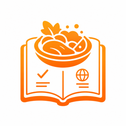
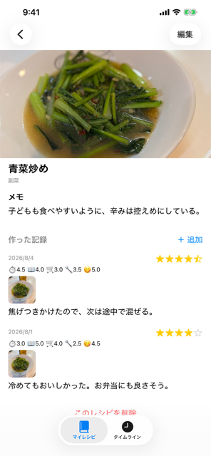
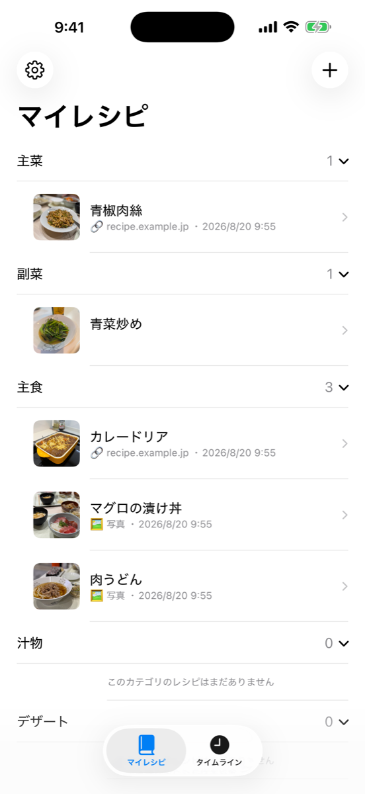
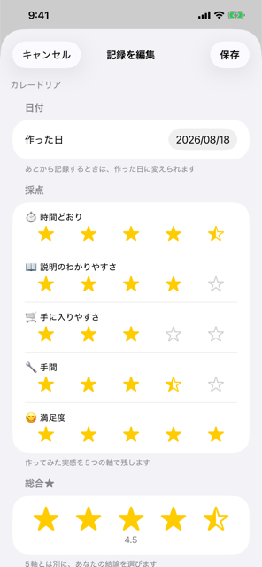
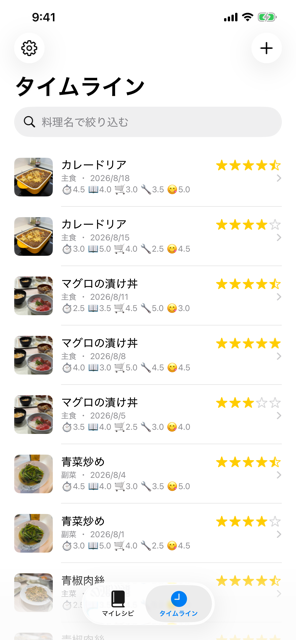

iPhone アプリ
ブックマークは増えていくのに、あのときの1本が出てこない。
レコログは、ネットで見つけた参考レシピを保管しておくアプリです。作るたびの「また作るか」も、そのレシピに紐づけて記録していきます。
参考レシピは URL か写真のどちらか1つ。材料や作り方の本文は書き写しません。実体はいつも参照先にあります。自分用の手順メモと代表写真だけを、自分の言葉で残してください。
1品のレシピに、作った記録が何件も積み上がっていきます。


おいしかったのは「鶏の照り焼き」ではなく「あのサイトの鶏の照り焼き」です。レコログは同じ料理名でも参考レシピが違えば別のものとして扱います。マイレシピはカテゴリごとにまとまって表示され、見出しをタップすれば開閉できます。
どのレシピが良かったのかを、次に作るときに思い出せます。
そして総合★は、5軸の平均ではありません。「結局これは また作るのか」——あなたの結論を、独立して残します。


タイムラインには、レシピをまたいで作った記録が新しい順に並びます。カテゴリと5軸の点数が一目で分かり、料理名で絞り込めます。
マイレシピの登録は20件まで、作った記録の追加は無制限に無料です。写真・採点・メモ・タイムライン・絞り込みはすべて使えます。
マイレシピ21件以上＋iCloud同期買い切り ¥480だけが有料です。購入すると、機種変更や複数端末でも記録が引き継がれます。一度の購入で、月額・年額の課金はありません。
解析 SDK・広告 SDK・トラッキングは入れていません。写真はアプリ内に複製せず、写真ライブラリの写真を参照します。
iCloud 同期はご自身のプライベートな iCloud にのみ保存され、開発者を含む第三者はアクセスできません。